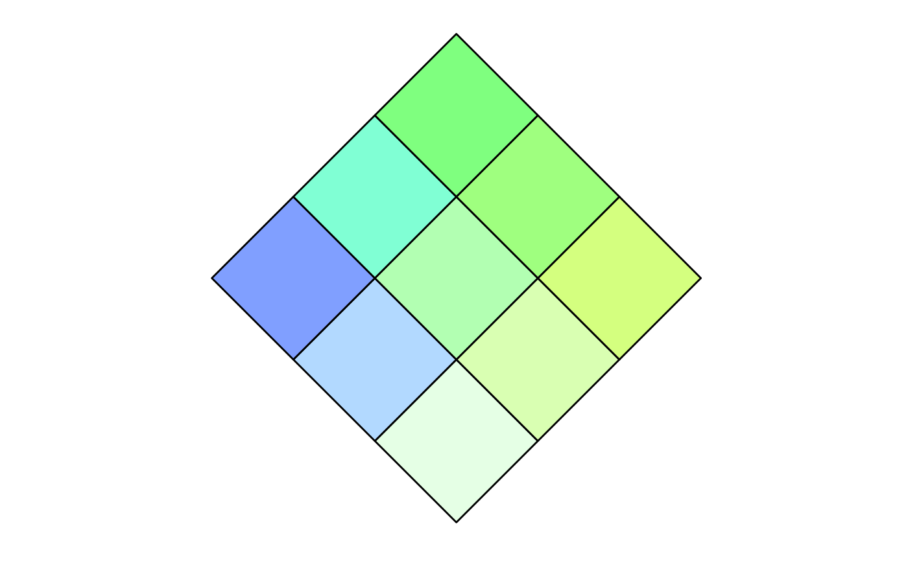

This function prepares one of the four included colour palettes or builds a new colour palette.
build_palette(
name,
colrange = list(colour = NULL, difC = NULL),
flipVertical = FALSE,
flipHorizontal = FALSE,
subtractive = FALSE
)Name of colour palette or usr for option to design a new
palette. Colour palette names include
BlueYellow, CyanMagenta, BlueRed and
GreenBlue.
List with a character vector of length two called colour and a numeric vector of length two called difC. colour contains two colour names from the colours() range or valid hexadecimal colors. difC contains two integers (1, 2, 3 or 4), which control how much a colour changes in value across the grid. One corresponds with a small change in colour value, and four corresponds with a large change in colour value.
Whether the palette should be flipped vertically (ie. replace top portion with bottom portion)
Whether the palette should be flipped horizontally (ie. replace left portion with right portion)
A logical evaluating to TRUE or FALSE indicating whether the colour mixing is subtractive or additive
Note that colrange only needs to be specified if name = "usr."
When choosing colours, it is best to avoid light colours or tints as these
will lead to a colour palette lacking noticeable differences across the 3 x 3
colour grid.
Note that subtractive = FALSE allows for additive colour mixing under
the RGB colour wheel while subtractive = TRUE allows for subtractive
colour mixing under the RYB colour wheel.
# use one of four prepared colour palettes
p <- build_palette(name = "CyanMagenta")
view(p)
# use subtractive colour mixing (blue + yellow = green)
p <- build_palette(name = "BlueYellow", subtractive = TRUE)
view(p)

# design a new palette
p <- build_palette(name = "usr", colrange =
list(colour = c("darkblue", "chartreuse4"), difC = c(3, 4)))
view(p)